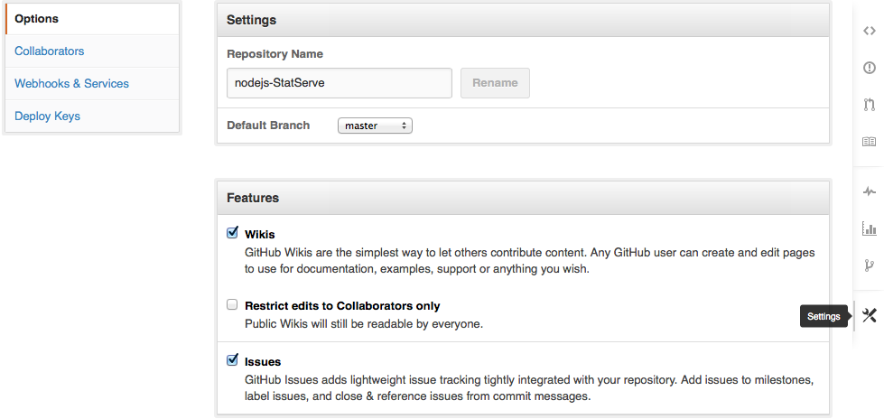

Enabling Static Sites with forms on PaaS.
This template for PaaS Static Site serving via NodeJS and ExpressJS is currently designed to be used on Heroku. Alter the Procfile and package.json to your apps specifications. Fork this repository to use for your own projects, or add functionality and submit a pull request.
Prerequisites
- Github Account
- NodeJS Installed
- npm Installed
- Heroku Account
- Heroku Toolbelt Installed
- Sendgrid Account
Suggested Workflow
Step 1: For this Repo
To fork this project, click the "Fork" button in the GitHub.com repository.

Step 2: Rename your Fork (Optional)
If you are going to use this in a project, and not to hack on and submit, change the name on Github in Settings.
Step 3: Clone
Clone the repository onto your dev system.
$ git clone (repo address)
$ cd (repo name)
Step 3a: Install Node Modules
$ npm installStep 4: Edit web.js
Edit web.js to reflect the site you are building.
- Sendgrid API:Setup a username and password with access to the Mail API on your Sendgrid account.
- Email Config: Configure To email to where you want the email to go. configure HTML and Text email with what you want them to send. Use code similar to the code below to pull details from a form.
html: '<html><head></head><body>Name: ' + req.body.name + '<br />' + 'Email: ' + req.body.email + '<br />' + 'Number: ' + req.body.contact_number + '<br />' + 'Message: ' + req.body.message + '</body></html>'
Step 5: Build Site!
Build your site in the 'public/' folder. The folder is already nicely laid out for a typical static website build. Change if you want.
Step 6: Publish Site!
Publish your site to Heroku!
$ heroku login
$ heroku create (app/site name)
$ heroku git:remote -a (app/site name)
$ git push heroku master